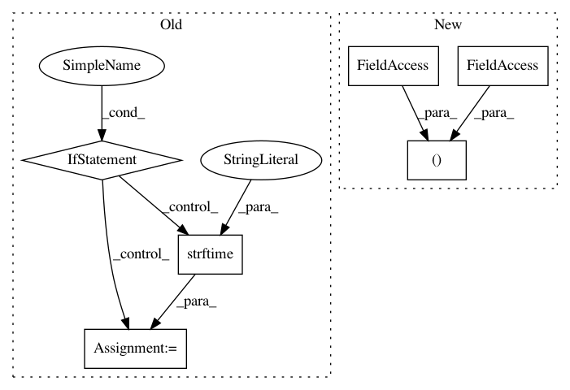

c741d1cf9c78f8cd60b40d58b88e8d3e4d636906,python/ray/tune/trainable.py,Trainable,__init__,#Trainable#Any#Any#,199
Before Change
self.config = config or {}
trial_info = self.config.pop(TRIAL_INFO, None)
if logger_creator:
self._result_logger = logger_creator(self.config)
self._logdir = self._result_logger.logdir
else:
logdir_prefix = datetime.today().strftime("%Y-%m-%d_%H-%M-%S")
ray.utils.try_to_create_directory(DEFAULT_RESULTS_DIR)
self._logdir = tempfile.mkdtemp(
prefix=logdir_prefix, dir=DEFAULT_RESULTS_DIR)
self._result_logger = UnifiedLogger(
self.config, self._logdir, loggers=None)
self._iteration = 0
self._time_total = 0.0
self._timesteps_total = None
self._episodes_total = None
After Change
self._create_logger(self.config)
self._stdout_context = self._stdout_fp = self._stdout_stream = None
self._stderr_context = self._stderr_fp = self._stderr_stream = None
self._stderr_logging_handler = None
stdout_file = self.config.pop(STDOUT_FILE, None)
In pattern: SUPERPATTERN
Frequency: 3
Non-data size: 6
Instances
Project Name: ray-project/ray
Commit Name: c741d1cf9c78f8cd60b40d58b88e8d3e4d636906
Time: 2020-08-03
Author: krfricke@users.noreply.github.com
File Name: python/ray/tune/trainable.py
Class Name: Trainable
Method Name: __init__
Project Name: dmlc/gluon-cv
Commit Name: 4b8716fd4bd6f462a9db9eee958f2508576ec019
Time: 2018-06-15
Author: cheungchih@gmail.com
File Name: gluoncv/utils/metrics/coco_detection.py
Class Name: COCODetectionMetric
Method Name: __init__
Project Name: rwth-i6/returnn
Commit Name: 49e4f21a1b9a13595e4b055f1b0421bd780f2240
Time: 2020-08-05
Author: albert.zeyer@rwth-aachen.de
File Name: returnn/__setup__.py
Class Name:
Method Name: get_version_str